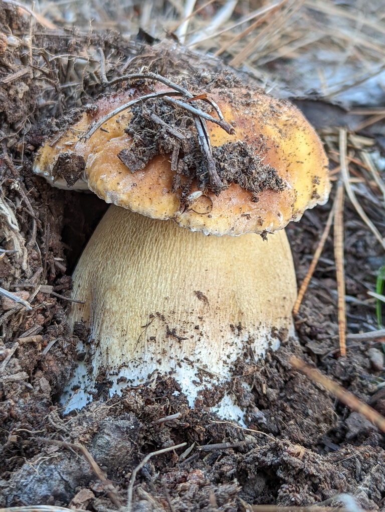
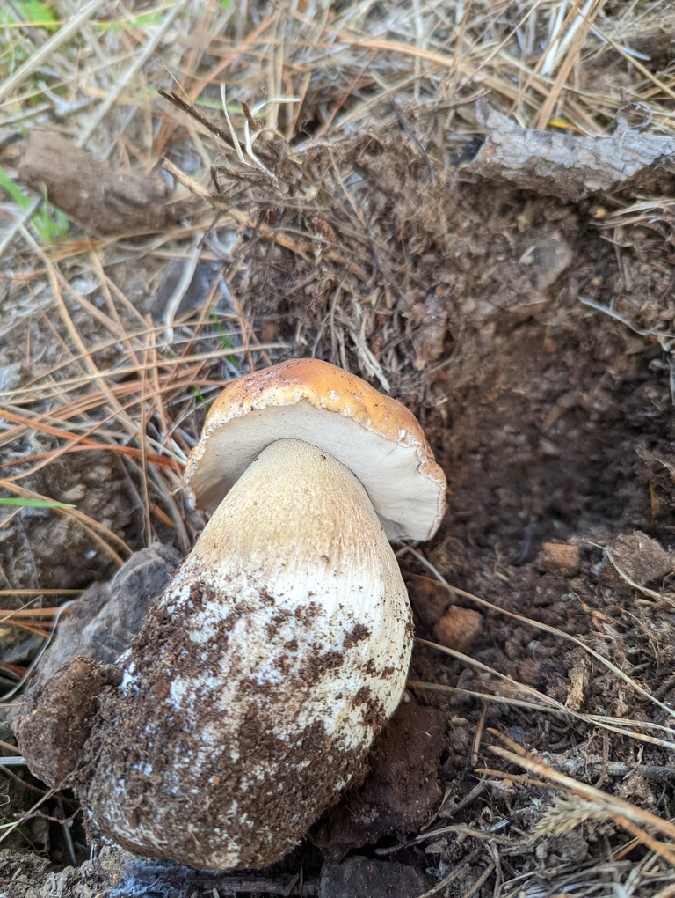
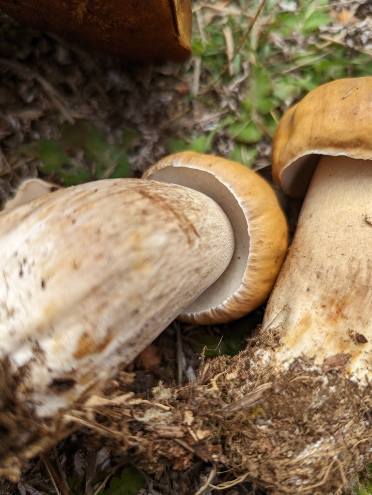

Boletus edulis
MykoWeb
This mushroom is similar to
Boletus regineus,
and it can be quite difficult to tell the two apart. I'm currently treating any
that I find with oak as B. regineus, and any with pine as B. edulis.
This is the prized king bolete, also known as porcini. It is one of several
boletus species that grow in the coastal forests, but the only one I have seen.
It is associated mainly with Bishop pine and Monterey pine. I find it to be
an excellent addition to gravy or pasta sauce.


